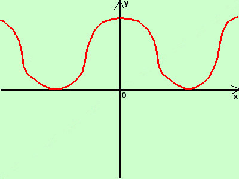

|
sviluppo Data la seguente funzione costruitene approssimativamente il grafico y = |cosx +1|  considero la funzione senza modulo y = cosx + 1 e' la funzione coseno aumentata di una unita' in verticale siccome la funzione cosx e' tutta compresa nella striscia di piano tra y=-1 ed y=+1 alzandola di 1 la funzione e' nella striscia da y=0 ad y=2, cioe' tutta sopra l'asse delle x, tale funzione coincide con il suo modulo y = |cosx +1|= cos(x+1) Disegno la curva (in rosso) |